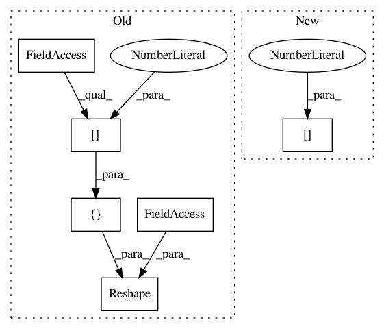

d38d1c85932d62fa23779c2e7f491d7a55627c14,src/graph_transpiler/webdnn/frontend/keras/layers/pooling.py,,_convert_average_pooling1d,#Any#Any#,70
Before Change
x = converter.get_variable(converter.get_input_tensor(k_op)[0])
// FIXME: More effective implementation
y, = Reshape(None, in_order=x.order, out_order=OrderNHWC, out_shape=[x.shape[0], x.shape[1], 1, x.shape[2]])
if k_op.padding == "valid":
padding = (0, 0)
After Change
padding = (0, 0)
elif k_op.padding == "same":
padding = (k_op.pool_size[0] // 2, k_op.pool_size[0] // 2)
else:
raise NotImplementedError(f"Unknown padding: {k_op.padding}")
In pattern: SUPERPATTERN
Frequency: 3
Non-data size: 6
Instances
Project Name: mil-tokyo/webdnn
Commit Name: d38d1c85932d62fa23779c2e7f491d7a55627c14
Time: 2017-07-03
Author: y.kikura@gmail.com
File Name: src/graph_transpiler/webdnn/frontend/keras/layers/pooling.py
Class Name:
Method Name: _convert_average_pooling1d
Project Name: mil-tokyo/webdnn
Commit Name: 959372edab3020c0164b8a2da4aaff1c49ba8400
Time: 2017-07-02
Author: y.kikura@gmail.com
File Name: src/graph_transpiler/webdnn/frontend/keras.py
Class Name:
Method Name: convert_layer_global_average_pooling2d
Project Name: mil-tokyo/webdnn
Commit Name: d38d1c85932d62fa23779c2e7f491d7a55627c14
Time: 2017-07-03
Author: y.kikura@gmail.com
File Name: src/graph_transpiler/webdnn/frontend/keras/layers/pooling.py
Class Name:
Method Name: _convert_max_pooling1d